Innovate, Simplify, Transform.
Contact usKoBi-AI is a subset of KobiWare, where our top machine learning reserchers endevour to train world-class models and discover new applications AI can be used for.
Follow our organization on huggingface to stay up to date on our model releases!
Since the creation of KobiWare in February 2023, we have developed many new software and game applications. Our first product, Stranded in the Sewers launched in February 2023 to critical acclaim and an immediate cult status. Since then, we have been inovating with new ideas such as Feiler File Manager, a 3D file explorer, and other software like Dawnlang and KobiMusic.
We launched KoBi-AI in June 2024 and we plan to use our expertise as a company to create new groundbreaking AI


Stranded in the Sewers was KobiWare's first game. It is a puzzle platformer, similar gamplay to that of game Fireboy and Watergirl.
Legends have it that they're headed to New York...

Timewinder is a puzzle game where you play as a time-traveling robot. You move around boxes and buttons to get to an end goal. These elements are effected in the future if you move them in the past.
View the itch.io project

Feiler File Manager is a file explorer like Nautilus, Dolphin, or Windows File Explorer. However, unlike those programs, it displays file objects in 3 demensions
It is bundled in the KobiWare Collection on itch.io